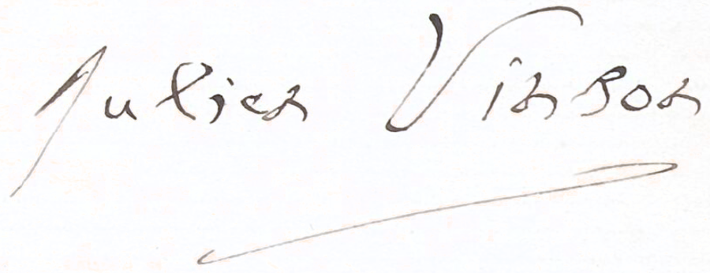

BnF Vinson collection

Julien Vinson (1843–1926) was a French linguist, specializing in Tamil. He grew up in Pondicherry and wrote the first grammar of Tamil in French. Some of his manuscripts seem to have been previously owned by Édouard Ariel, bearing the characteristic title folios of his collection.